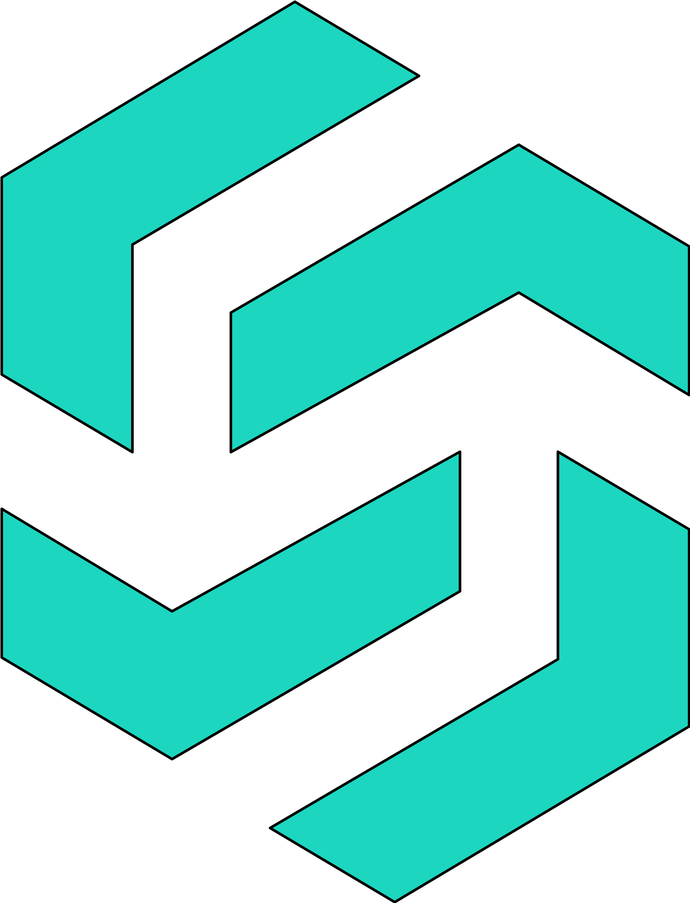
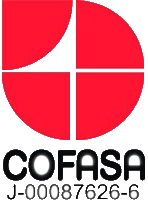

Dibal
Es una Startup, cuyo objetivo es desarrollar un sistema web para múltiples
restaurantes. Soy el primer desarrollador que
contrataron, comenzamos con herramientas que la empresa solicitó,
como jQuery y Laravel. Con el tiempo hemos aprendido, gracias a los
requerimientos de los clientes, a entenderlos y satisfacer sus necesidades.
Después de meses contratamos a otro desarrollador y poco a poco
hemos ido creciendo como empresa. Actualmente soy el Ingeniero de
Software a cargo de proyectos y toma de decisiones en materia de
desarrollo.
Actualmente estoy trabajando en el desarrollo de un e-commerce (en
Vue) que vinculará la gestión del restaurante con los clientes, para evitar
al máximo la interacción humana.
Puede ver una vista previa de la vinculacion en este enlace: Jobal.pe
También soy el encargado del despliegue en AWS, teniendo experiencia
en servicios como EC2, RDS, S3, Route 53, SES, AutoScalling y
LoadBalancer.
Chequea esta pagina aca.

AppInteli
Sistema informático para PYMEs
Paralelamente a mi trabajo formal actual, estoy desarrollando, con un colega, un sistema web para la gestión de ventas y todo lo que eso conlleva. Todavía está en una etapa muy joven, pero este proyecto es un nuevo desafío para mí.
Chequea esta pagina aca.

Sistema informático para la mejora de producción
Es una empresa de desarrollo de fármacos. Desarrollé un sistema web para monitorear el proceso de producción, desde el inicio del lote, toma en cuenta las paradas de los equipos, hasta la finalización. Con estos datos podrían determinar qué decisiones tomar y mejorar la productividad.